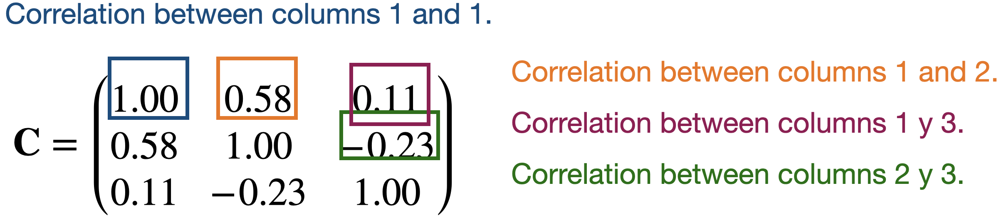

Análisis de componentes principales
Reducción de Dimension
El Análisis de Componentes Principales (ACP) nos ayuda a reducir la dimensión de los datos.
Crea un nuevo eje de coordenadas en dos (o más) dimensiones.
Técnicamente, crea nuevos predictores combinando predictores altamente correlacionados. Los nuevos predictores no están correlacionados.
Preparación
Paso 1. Comenzamos con una base de datos con \(n\) observaciones y \(p\) predictores.
| 15 |
14 |
5 |
| 2 |
1 |
6 |
| 10 |
3 |
17 |
| 8 |
18 |
9 |
| 12 |
16 |
11 |
Paso 2. Estandarizamos cada predictor individualmente.
\[{\color{blue} \tilde{X}_{i}} = \frac{{ X_{i} - \bar{X}}}{ \sqrt{\frac{1}{n -1} \sum_{i=1}^{n} (X_{i} - \bar{X})^2 }}\]
|
1.15 |
0.46 |
-0.96 |
|
-1.52 |
-1.20 |
-0.75 |
|
0.12 |
-0.95 |
1.55 |
|
-0.29 |
0.97 |
-0.13 |
|
0.53 |
0.72 |
0.29 |
| Suma |
0 |
0 |
0 |
| Varianza |
1 |
1 |
1 |
Paso 3. Asumimos que la base de datos estandarizada es una matrix \(\mathbf{X}\) de \(n\times p\).
\[\mathbf{X} = \begin{pmatrix}
1.15 & 0.46 & -0.96 \\
-1.52 & -1.20 & -0.75 \\
0.12 & -0.95 & 1.55 \\
-0.29 & 0.97 & -0.13 \\
0.53 & 0.72 & 0.29 \\
\end{pmatrix}\]
Algoritmo
El algoritmo de ACP tiene su origen en el álgebra lineal.
Su idea básica es:
Crear una matriz \(\mathbf{C}\) con las correlaciones entre los predictores de la matriz \(\mathbf{X}\).
Partir la matrix \(\mathbf{C}\) en tres partes que nos dan el nuevo eje de coordenadas y la importancia de cada eje.
Matriz de Correlación
Siguiendo con nuestro ejemplo, la matriz de correlación contiene las correlaciones entre dos columnas de \(\mathbf{X}\).

Partición de la matriz de correlación
La partición de la matrix \(\mathbf{C}\) se hace usando el método de descomposición por valores y vectores propios.


Las columnas de \(\mathbf{B}\) definen los ejes del nuevo sistema de coordenadas. Estos ejes se llaman componentes principales.
Los valores diagonales en \(\mathbf{A}\) definen la importancia individual de cada componente principal (eje).
Proporción de la dispersión explicada por el componente
\[\mathbf{A} = \begin{pmatrix}
1.60 & 0.00 & 0.00 \\
0.00 & 1.07 & 0.00 \\
0.00 & 0.00 & 0.33 \\
\end{pmatrix}\]
La proporción de la dispersión en los datos que es capturada por el primer componente es \(\frac{a_{1,1}}{p} = \frac{1.60}{3} = 0.53\). La proporción capturada por el segundo componente es \(\frac{a_{2,2}}{p} = \frac{1.07}{3} = 0.36\). La proporción capturada por el tercer componente es \(\frac{a_{3,3}}{p} = \frac{0.33}{3} = 0.11\).
Comentarios
Los componentes principales se pueden usar para aproximar una matriz.
Por ejemplo, podemos aproximar la matriz \(\mathbf{C}\) al fijar el tercer componente igual a cero.
\[\begin{pmatrix}
-0.68 & 0.35 & 0.00 \\
-0.72 & -0.13 & 0.00 \\
0.16 & 0.93 & 0.00\\
\end{pmatrix} \begin{pmatrix}
1.60 & 0.00 & 0.00 \\
0.00 & 1.07 & 0.00 \\
0.00 & 0.00 & 0.00 \\
\end{pmatrix} \begin{pmatrix}
-0.68 & -0.72 & 0.16 \\
0.35 & -0.13 & 0.93 \\
0.00 & 0.00 & 0.00 \\
\end{pmatrix} = \begin{pmatrix}
0.86 & 0.73 & 0.18 \\
0.73 & 0.85 & -0.30 \\
0.18 & -0.30 & 0.96 \\
\end{pmatrix}\]
\[\approx \begin{pmatrix}
1.00 & 0.58 & 0.11 \\
0.58 & 1.00 & -0.23 \\
0.11 & -0.23 & 1.00 \\
\end{pmatrix} = \mathbf{C}\] ##
Las aproximaciones son útiles para almacenar matrices grandes.
Esto se porque solo necesitamos almacenar los valores propios más grandes y sus vectores propios correspondientes para recuperar una aproximación de alta calidad de la matriz completa.
Esta es la idea detrás de la compresión de imagenes.
Ejemplo
Considera una base de datos de las 100 canciones más populares en TikTok. Los datos están en el archivo “TikTok 2020 reduced.xlsx“. Se tienen observaciones de varios predictores como:
La bailabilidad describe qué tan adecuada es una pista para bailar basándose en una combinación de elementos musicales.
La energía es una medida de 0 a 1 y representa una medida perceptiva de intensidad y actividad.
El volumen general de una pista en decibelios (dB). Los valores de sonoridad se promedian en toda la pista.
El habla detecta la presencia de palabras habladas en una pista. Cuanto más exclusivamente parecida a un discurso sea la grabación.
Una medida de confianza de 0 a 1 sobre si la pista es acústica.
Detecta la presencia de una audiencia en la grabación.
Una medida de 0 a 1 que describe la positividad musical que transmite una pista.
El Scree o Summary Plot te dice la variabilidad capturada por cada componente. Dicha variabilidad es dada por el Eigen value o valor propio. De 1 a 8 componentes.
El primer componente abarca la mayor parte de la dispersión de los datos.
Esta gráfica se usa para definir el número total de componentes a usar.
Biplot
- Muestra las observaciones gráficas en el nuevo eje de coordenadas dado por los dos primeros componentes.
- Ayuda a visualizar los datos de tres o más predictores usando una gáfica de dispersión en 2 dimensiones.
- Una linea roja da las dirección de crecimiento de la variable etiquetada.